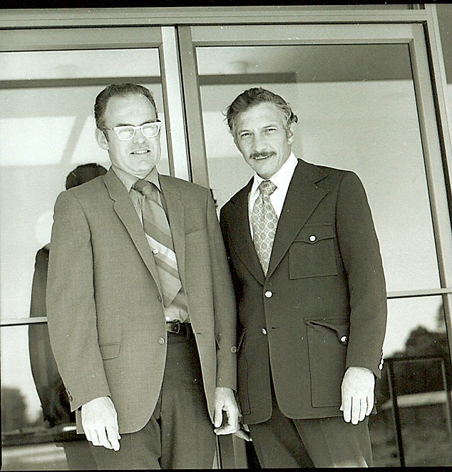
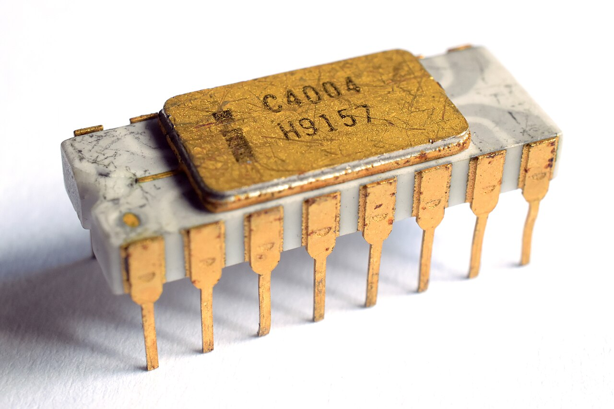
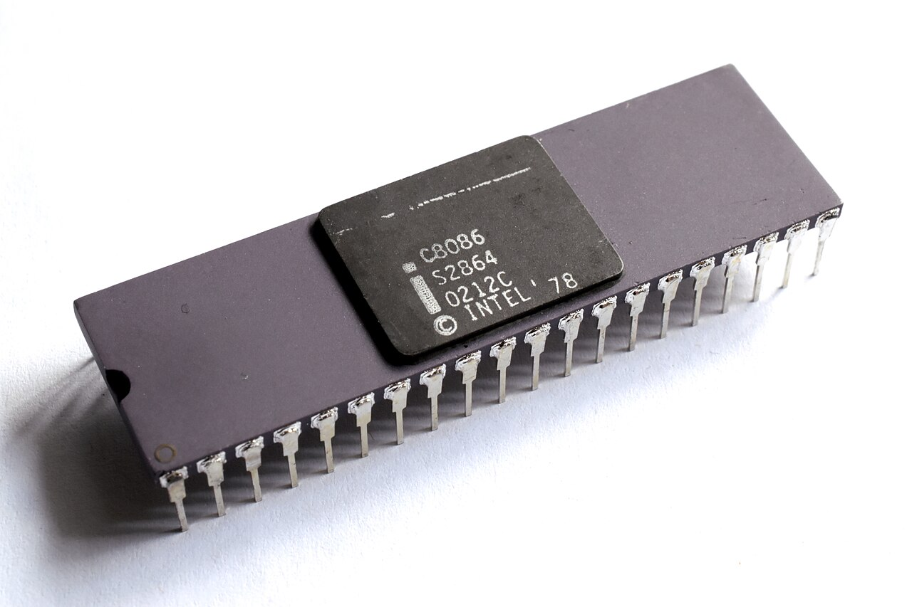
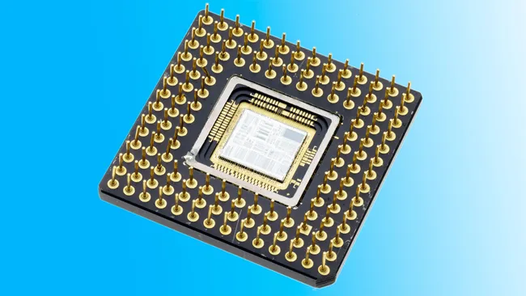
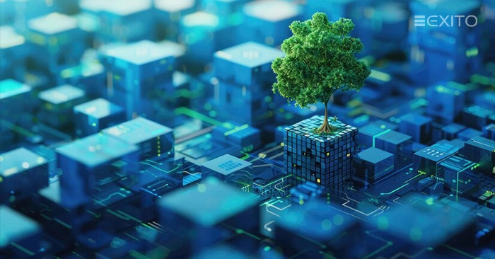
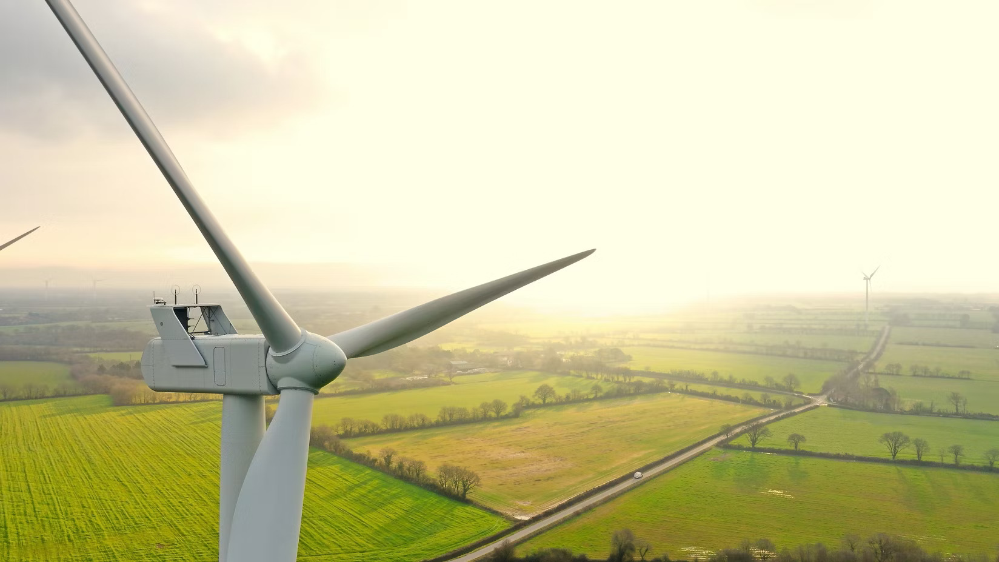
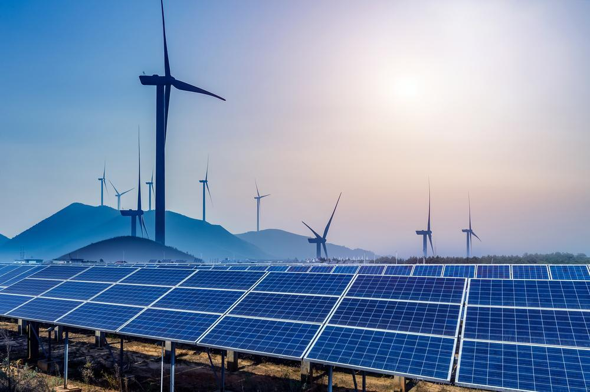
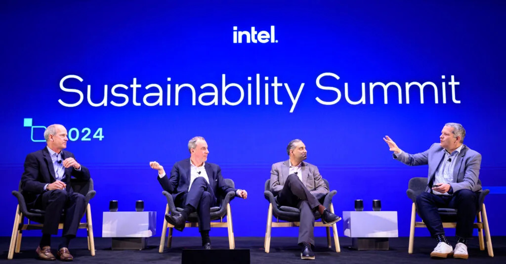

Sustainability Through the Ages
Explore Intel's journey through time, discovering how our commitment to innovation has shaped a more sustainable future for technology and our planet.
Explore Intel's journey through time, discovering how our commitment to innovation has shaped a more sustainable future for technology and our planet.
Scroll horizontally to explore Intel's major sustainability milestones.









Scroll to view timeline | Hover over cards to learn more!